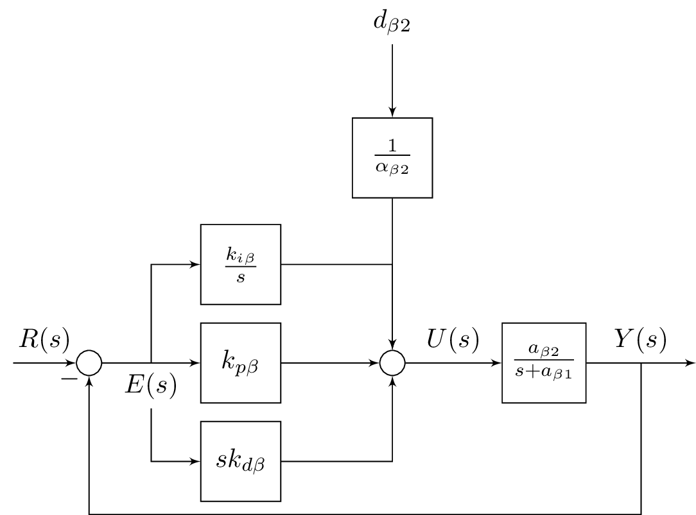

\documentclass{standalone}
\usepackage{tikz}
\usetikzlibrary{shapes,arrows,positioning,calc}
\begin{document}
\tikzset{
block/.style = {draw, fill=white, rectangle, minimum height=3em, minimum width=3em},
tmp/.style = {coordinate},
sum/.style= {draw, fill=white, circle, node distance=1cm},
input/.style = {coordinate},
output/.style= {coordinate},
pinstyle/.style = {pin edge={to-,thin,black}
}
}
%\begin{figure}[!htb]
%\centering
\begin{tikzpicture}[auto, node distance=2cm,>=latex']
\node [input, name=rinput] (rinput) {};
\node [sum, right of=rinput] (sum1) {};
\node [block, right of=sum1] (controller) {$k_{p\beta}$};
\node [block, above of=controller,node distance=1.3cm] (up){$\frac{k_{i\beta}}{s}$};
\node [block, below of=controller,node distance=1.3cm] (rate) {$sk_{d\beta}$};
\node [sum, right of=controller,node distance=2cm] (sum2) {};
\node [block, above = 2cm of sum2](extra){$\frac{1}{\alpha_{\beta2}}$}; %
\node [block, right of=sum2,node distance=2cm] (system)
{$\frac{a_{\beta 2}}{s+a_{\beta 1}}$};
\node [output, right of=system, node distance=2cm] (output) {};
\node [tmp, below of=controller] (tmp1){$H(s)$};
\draw [->] (rinput) -- node{$R(s)$} (sum1);
\draw [->] (sum1) --node[name=z,anchor=north]{$E(s)$} (controller);
\draw [->] (controller) -- (sum2);
\draw [->] (sum2) -- node{$U(s)$} (system);
\draw [->] (system) -- node [name=y] {$Y(s)$}(output);
\draw [->] (z) |- (rate);
\draw [->] (rate) -| (sum2);
\draw [->] (z) |- (up);
\draw [->] (up) -| (sum2);
\draw [->] (y) |- (tmp1)-| node[pos=0.99] {$-$} (sum1);
\draw [->] (extra)--(sum2);
\draw [->] ($(0,1.5cm)+(extra)$)node[above]{$d_{\beta 2}$} -- (extra);
\end{tikzpicture}
%\caption{A PID Control System} \label{fig6_10}
%\end{figure}
\end{document}